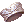

Schwartz's Honor Token
Schwartz's Honor Tokens are a form of currency that can be obtained through various quests from the Terra Gloria update. To access these NPCs, you must complete the Terra Gloria Main Quest to at least step 18.
Item Exchange
You can exchange  Schwartz's Honor Tokens with Strasse (
Schwartz's Honor Tokens with Strasse (rebel_in 74/67) for various equipments. He can be found inside Clana Nemieri.
| Consumable | Cost | Type | Description |
|---|---|---|---|
 Agenda Robe [1] Agenda Robe [1]
|
500 Schwartz's Honor Token
|
Armor | MATK +5%. Enables Spell Breaker Lv 1.
If the user's Base Level is 120 or higher, additional MATK +4%. If the user's Base Level is 140 or higher, additional MATK +5%. If equipped with Ancient Cape, reduce Variable Cast Time by 2% per refine level of Agenda Robe. The user's casting cannot be interrupted outside of WoE. If equipped with Survivor's Manteau, adds 1% chance (per refine level of Agenda Robe) of auto casting Heal Lv 1 on the user when performing magical attacks. |
 Consultation Robe [1] Consultation Robe [1]
|
500 Schwartz's Honor Token
|
Armor | VIT +5. Reduces damage received from Fire and Shadow property attacks by 3% per refine level of Consultation Robe. Enables Martyr's Reckoning Lv 1.
If equipped with Morrigane's Manteau, AGI +1 per refine level of Consultation Robe. Flee +2 per refine level of Consultation Robe. The user's property becomes Ghost Lv 1. If equipped with Valkyrie Manteau, VIT +5. Additional VIT +1 per refine level of Consultation Robe. LUK +1 per refine level of Consultation Robe. Reduces damage received from Neutral, Fire, and Shadow property attacks by 10%. If Consultation Robe is refined to +10 or higher, reduces damage received from Neutral property attacks by an additional 10%. If equipped with Valkyrie Manteau and Deviling Card, disables the effects of Deviling Card. |
| Republic Hat [1] | 1250 Schwartz's Honor Token
|
Armor | Long range physical attack damage +6%.
If refined to +7 or higher, additional long range physical attack damage +2%. If refined to +10 or higher, additional long range physical attack damage +4%. |
 Mercenary Ring Type A Mercenary Ring Type A
|
500 Schwartz's Honor Token
|
Accessory | VIT +3.
If equipped by Novice, Taekwon, Ninja, or Gunslinger class, MaxHP +1000, MaxSP +200. |
|  Mercenary Ring Type B | 500 Schwartz's Honor Token
|
Accessory | INT +3.
If equipped by Novice, Taekwon, Ninja, or Gunslinger class, reduces Variable Cast Time by 30%. |
Enchantment
Hogar will enchant some armors in exchange for Schwartz's Honor Tokens. He can be found in the prison at rebel_in 89/40.
Mercenary Ring (type A and B) enchants
The Mercenary Ring Type A and Mercenary Ring Type B can each be enchanted twice. Both enchants can be any stats varying from +1 to +2.
- Enchanting the ring costs 5 Schwartz's Honor Token and has no chance to break.
- Resetting the enchantment costs 10 Schwartz's Honor Token and has a 20% chance of destroying the item.
Robe enchants
The Agenda Robe and the Consultation Robe can be enchanted twice as well. Both enchants can be any of the Nives listed below.
- Enchanting the Robes costs 20 Schwartz's Honor Tokens and has no chance to break.
- Resetting the enchantment costs 10 Schwartz's Honor Tokens and has no chance to break. You can only reset a fully enchanted robe.
| Name | Enchant |
|---|---|
| Powerful Nive (Strength) | Powerful Nive Lv 1 |
| Agile Nive (Agility) |  Agile Nive Lv 1 Agile Nive Lv 1
|
| Spellbound Nive (Intelligence) |  Spellbound Nive Lv 1 Spellbound Nive Lv 1
|
| Dextrous Nive (Dexterity) |  Dextrous Nive Lv 1 Dextrous Nive Lv 1
|
| Lucky Nive (Luck) |  Lucky Nive Lv 1 Lucky Nive Lv 1
|
| Stamina Nive (Vitality) |  Stamina Nive Lv 1 Stamina Nive Lv 1
|


Enchantment scrolls
For 5 Schwartz's Honor Tokens Hogar will sell an  Enchantment Scroll (16.2).
Enchantment Scroll (16.2).
- These can be traded, unlike the tokens themselves.
- You'll need a single scroll to enchant an accessory and four scrolls to enchant a robe.